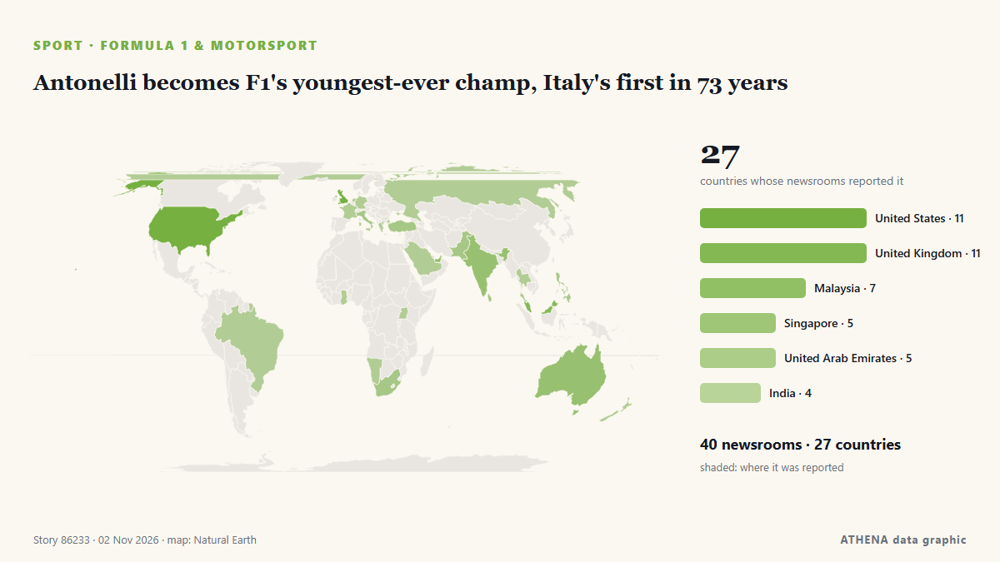

Deportes
PatrocinadoPresentado por  Cybernetics and Artificial Intelligence Lab Welcome to the Cybernetics and Artificial Intelligence Laboratory, established at the Department of Business Administration of the National
Cybernetics and Artificial Intelligence Lab Welcome to the Cybernetics and Artificial Intelligence Laboratory, established at the Department of Business Administration of the National
Los titulares se muestran en inglés, tal como se publicaron.

Fórmula 1 y motorAntonelli becomes F1's youngest-ever champ, Italy's first in 73 years
Publicado por 49 medios de 31 países desde el 31 oct. Primero en informar: CNA (Channel NewsAsia).
| 20 oct | 0 |
|---|---|
| 21 oct | 9 |
| 22 oct | 12 |
| 23 oct | 16 |
| 24 oct | 9 |
| 25 oct | 32 |
| 26 oct | 45 |
| 27 oct | 64 |
| 28 oct | 61 |
| 29 oct | 72 |
| 30 oct | 102 |
| 31 oct | 65 |
| 1 nov | 57 |
| 2 nov | 20 |
Alcaraz beats De Minaur to win Vienna title
Carlos Alcaraz beat Alex de Minaur 6-1 6-4 to win the Vienna Open on Sunday, claiming his fourth title of the season and the 28th of his career, and extending his ATP 500 winning streak to 26 matches. de Cyprus Mail
09:56 Summer Youth Olympic Games flame lit in Senegal Sport
The country is hosting nearly 2,700 young competitors aged 14 to 17 from around the world. de Channels TV
Chinese state TV fails to air Real Madrid match after Mbappe row
Mbappe, Real and La Liga later all said sorry for his remarks, and China's foreign ministry said it took the player's apology "seriously". de CNA (Channel NewsAsia)
Hamilton laments Ferrari's missed one-two after Leclerc clash in Mexico
Charles Leclerc clocked a best lap time in 1min and 18.128sec to outpace Kimi Antonelli by 0.659sec in the opening free practice of the Mexico City Grand Prix. de Free Malaysia Today
Harry Kane misses penalty in first match since Ballon d'Or triumph
Bayern Munich striker Harry Kane has beaten Barcelona youngster Lamine Yamal and Real Madrid forward Kylian Mbappé to emerge as the best player of the 2025-2026 season in Spanish newspaper Marca's… de Vanguard
Andoni Iraola: We have to tell players to dive for penalties
Alexander Isak was denied a spot-kick in Liverpool’s loss to Arsenal despite a clear pull by Jurrien Timber. de The Irish News (Belfast)
Arsenal win at Anfield for first time in 14 years to move top
Arsenal won at Anfield for the first time in 14 years after Kai Havertz's strike sealed a gritty 1-0 victory - but Liverpool were denied what looked to be a clear penalty. de Sky Sports
Penalty drops Oscar Piastri out of F1 Mexico GP points
Oscar Piastri’s tough Mexico Grand Prix weekend has ended in point-less fashion, after the McLaren Formula 1 driver copped a penalty for his collision with Arvid Lindblad. de Motorsport.com
14 players could miss Liverpool vs Arsenal after Andoni Iraola injury update
Liverpool have the chance to close the gap on Arsenal in the Premier League table when they meet at Anfield this afternoon. de Liverpool Echo
Yamashita comes out on top at Maybank Championship
Highlights of round four of the LPGA Maybank Championship in Kuala Lumpur. de Sky Sports
Mercedes driver Kimi Antonelli becomes youngest champion in F1 history at age 20
Twenty-year-old Mercedes driver Kimi Antonelli became the youngest champion in the history of Formula 1 on Sunday with four races still left in the season. de The Canadian Press (via CityNews)
De Minaur upsets Zverev, will face Alcaraz in Vienna final
Alex de Minaur held his nerve to overcome incoming men's No. de Free Malaysia Today
Djokovic faces ATP Finals battle after loss in Basel
Returning to Basel for the first time in 15 years, Novak Djokovic, lost 6-7(4), 7-5, 7-6(5) to German veteran Jan-Lennard Struff in Thursday’s second round, his first defeat in nine meetings. de Free Malaysia Today
Barca hammer Alaves 6-1 to retain Liga top spot
Raphinha and Lamine Yamal struck twice each as Barcelona thrashed Alaves 6-1 on Saturday to reclaim their La Liga lead and get back on track after two damaging defeats. de Vanguard
Canelo reclaims WBC title as Mexico falls 5-4 to The World in Riyadh boxing showdown
RIYADH: Mexican boxing star Saul “Canelo” Alvarez reclaimed the World Boxing Council Super Middleweight title after defeating France’s Christian Mbilli by unanimous decision in the final bout of… de Arab News
Yamaha pulls out of Qatar MotoGP over ‘situation in the Middle East’
MotoGP says Yamaha's lack of participation at next weekend's event in Lusail 'carries sporting implications'. de Al Jazeera English
Lawson disqualified from Mexico City GP qualifying, to start last
Stewards slapped both drivers with grid penalties after practice contact left debris scattered across the Mexico City track. de Stuff
Brighton stun Man City, 10-man Man Utd beaten by Chelsea
Brighton inflicted a second straight Premier League defeat on Manchester City with a 1-0 win to close within two points of the leaders on Saturday, while Manchester United slumped to another damaging… de The Namibian
Ukraine calls allowing return of Russian ice hockey teams to world championships ‘unacceptable’
Foreign minister says return of Russian teams while Ukraine war continues would give Moscow international legitimacy it seeks. de Anadolu Agency (English)
Russia back in ice hockey world championships after sport court ruling
Court of Arbitration for Sport overturned IIHF decisions that excluded Russia from events in the 2026-27 season. de Al Jazeera English
Aston Villa vs Jamie Carragher - 'Unacceptable insults', legal action and an apology
Jamie Carragher has been pushing a narrative that Unai Emery should leave Aston Villa for Manchester United if given the chance, and from there, things have escalated. de Birmingham Mail
Senegal kicks off 2026 Youth Olympic Games
Senegal’s three-day general strike entered its second day on Thursday, with unions pressing the government to honour agreements on pay, pensions and working conditions amid a deepening economic… de RFI English
Pressure piles on Man United’s Carrick after 2-0 defeat at Chelsea
The travelling fans applauded Michael Carrick when he strode to the corner of the Shed End at Stamford Bridge to acknowledge them but Manchester United’s former stalwart midfielder and current… de Cyprus Mail
Kenya: Ruto - Why Bayern V Ajax in Nairobi Is Perfect Tribute to Former PM Raila Odinga
[Capital FM] NAIROBI -- President William Ruto believes there could be no better way to honour former Prime Minister Raila Odinga than a blockbuster tie between Bayern Munich and Ajax at a stadium… de AllAfrica
Kane misses penalty as Bayern draw 2-2 with Dortmund
Harry Kane missed a penalty for Bayern Munich and was punished by Fabio Silva’s late equaliser as Borussia Dortmund earned a 2-2 draw in Der Klassiker. de Sky Sports
In-form Fernandez sets up Tokyo final against Russia's Shnaider
The world number 23 from Canada defeated Uzbekistan's Kamilla Rakhimova 7-5, 6-3 to reach her second consecutive final. de Free Malaysia Today
Zaman's century foils Sri Lanka as Pakistan win tri-series
LAHORE: Opener Fakhar Zaman returned to form with a brilliant century to help Pakistan beat Sri Lanka by three wickets in the tri-series final in Lahore on Saturday. de Business Recorder
Dakar 2026 Youth Olympics opens in historic first for Africa
A Namibian team of 12 athletes will represent the nation at the first ever Youth Olympic Games in Africa, which kick off in Dakar, Senegal, tomorrow. de The Namibian
Spain win inaugural FIFA U15 World Cup
Spain won the inaugural FIFA Under-15 World Cup and Festival after defeating the Czech Republic 3-0 in Friday’s final in Baku, Azerbaijan. de Trinidad Express
Hakimi bags hat-trick as PSG thrash Le Havre 5-1
Achraf Hakimi rose to the occasion scoring a glorious hat-trick on Friday as a heavily rotated Paris Saint-Germain thumped rock-bottom Le Havre 5-1 in Ligue 1. de Vanguard
Man City beaten by Brighton as Yasin Ayari makes amends for midweek penalty miss
Ayari missed a spot-kick in Wednesday’s shoot-out defeat in the Carabao Cup against City but scored the only goal of the game on Saturday. de The Irish News (Belfast)
Arteta tells Dowman Premier League is 'not Disneyland' after ban upheld
LONDON: Arsenal manager Mikel Arteta said teenager Max Dowman must learn to cope with the demands of elite football after the winger’s red card in the League Cup defeat at fourth-tier Fleetwood Town… de New Straits Times
Medvedev into Vienna semis and books ATP Finals place
VIENNA: Daniil Medvedev will meet Carlos Alcaraz in the semi-finals of the Vienna ATP 500 tournament after beating Frenchman Adrian Mannarino on Friday, securing a place in the year-end ATP Finals in… de New Straits Times
Michael Carrick confirms Bruno Fernandes will remain Manchester United captain
Manchester United captain Bruno Fernandes turned on head coach Michael Carrick after one of the club's most humiliating nights in European history. de MyJoyOnline